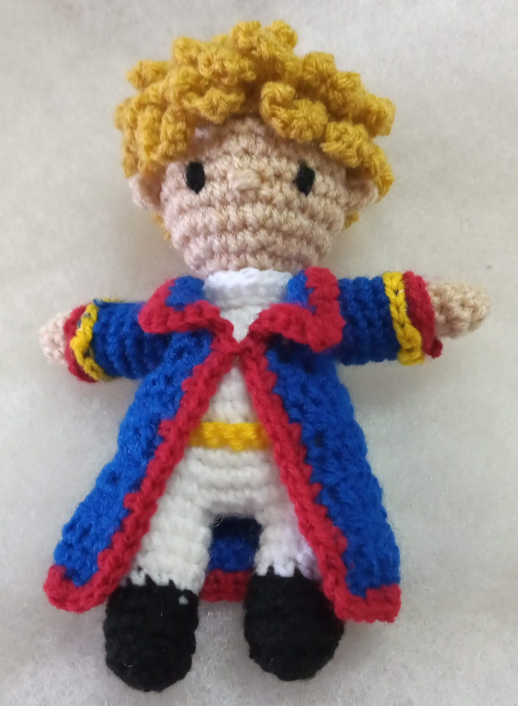
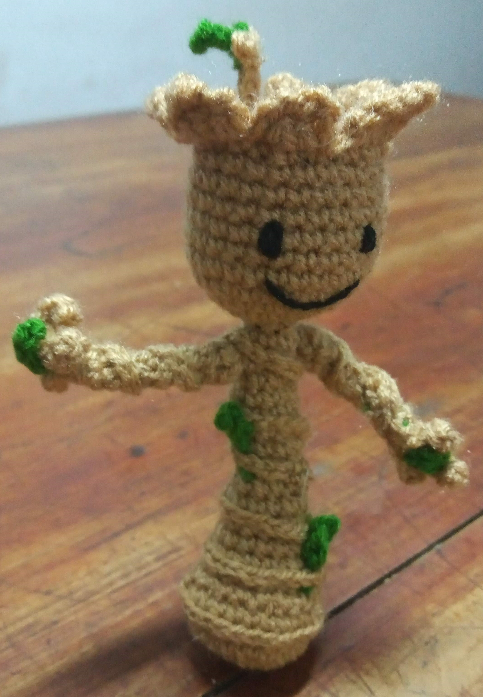
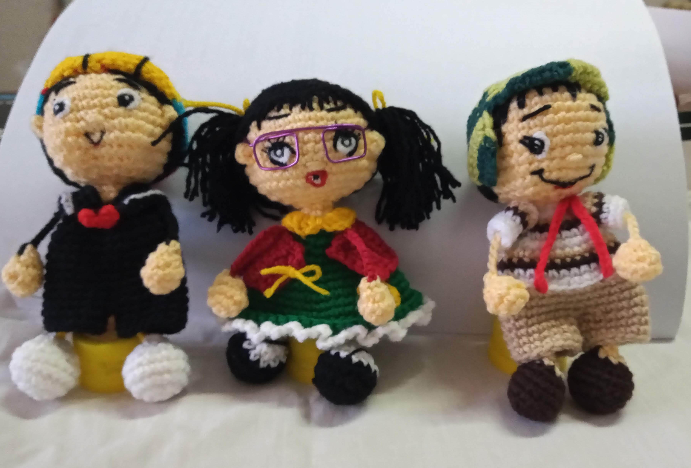

-
Stitch
Un amigurumi de Stitch tejido al crochet es simplemente adorable. Este personaje de Disney, conocido por su aspecto azul y peludo, cobra vida en forma de una pequeña criatura mullida y tierna. Con hilos de colores brillantes y técnicas de crochet, este amigurumi Stitch es un pequeño compañero que seguramente robará corazones y alegrará cualquier colección de peluches.
-

El principito
Un llavero del Principito tejido al crochet es una obra de arte minuciosa. Confeccionado con hilos de colores cuidadosamente seleccionados, este pequeño tesoro representa al Principito. Este llavero es una muestra de habilidad en el crochet, un tributo al personaje literario y una forma encantadora de llevarlo contigo a todas partes.
-

Groot
Un llavero de Groot tejido al crochet es una creación asombrosa. Con hilos de varios tonos de marrón y verde, se forma la figura icónica de Groot, el personaje de Guardianes de la Galaxia. Este llavero, tejido con amor y paciencia, captura la esencia de Groot y es una pieza única para cualquier fan de la saga.
-

Los 3 chanchitos
Los tres cerditos y el lobo tejidos al crochet serían representaciones encantadoras de este famoso cuento infantil. Estas miniaturas tejidas al crochet capturarían la esencia de esta historia clásica y serían una forma creativa de narrar el cuento visualmente. También serían una opción encantadora como juguetes o decoración para cualquier fanático de los cuentos infantiles.
-

Marvel
Los personajes de Marvel tejidos al crochet son encantadoras miniaturas que rinden homenaje a los icónicos superhéroes y villanos del universo Marvel. Cada personaje está cuidadosamente tejido con hilos de colores para capturar la apariencia y los detalles distintivos de los personajes. Estas miniaturas tejidas al crochet son una forma creativa y única de celebrar el mundo de Marvel y llevar a tus personajes favoritos contigo en cualquier momento.
-

La granja de Zenón
Una granja de Zenón tejida al crochet es una representación encantadora de este popular mundo animado. Cada elemento de la granja se teje con hilos de colores vivos para capturar la alegría y vitalidad del programa. Una granja de Zenón tejida al crochet puede ser un regalo encantador para los fanáticos de todas las edades.
-

La vecindad del Chavo
Una representación tejida al crochet de los personajes de la Vecindad del Chavo, como Quico, la Chilindrina y el Chavo, sería una adición encantadora y nostálgica para los fanáticos de esta serie icónica. Estas miniaturas tejidas al crochet serían una forma encantadora de recordar y honrar a estos queridos personajes de la Vecindad del Chavo y podrían servir como elementos decorativos o juguetes para los fanáticos de la serie.
-
Muñequitas
Las muñequitas con vestidos de colores tejidas al crochet para llaveros son creaciones encantadoras y versátiles. Cada muñeca está tejida con detalles precisos y colores brillantes. Estas muñequitas con vestidos de colores tejidas al crochet serían perfectas como llaveros, colgantes decorativos o incluso regalos especiales. Son una muestra de habilidad en el arte del tejido y agregan un toque de encanto y alegría a cualquier lugar donde se utilicen.
-

Laboratorio químico
Los elementos de un laboratorio químico tejidos al crochet serían representaciones encantadoras y creativas de instrumentos y objetos comunes utilizados en un entorno de laboratorio. Estos elementos tejidos al crochet en un laboratorio químico serían piezas decorativas creativas y educativas, perfectas para decorar el espacio de un amante de la ciencia o como regalos temáticos para estudiantes de química.
-

Albert Einstein
Un llavero de Albert Einstein tejido al crochet es una pieza ingeniosa y única. Los hilos de colores cuidadosamente seleccionados se entrelazan para formar su rostro, y su mirada perspicaz se plasma con precisión. Este llavero tejido es un tributo creativo a la genialidad de Einstein y una forma encantadora de llevar un toque de ciencia en tu día a día.
-

Patitas
Unos piececitos simbólicos tejidos al crochet son pequeñas obras de arte que encarnan la ternura y la habilidad artesanal. Creados con hilos suaves y tejidos con atención meticulosa, estos piececitos capturan la esencia de la infancia y la fragilidad de los primeros pasos en la vida. Estos piececitos tejidos son símbolos de amor y cuidado, ideales como regalos para celebrar la llegada de un bebe.
-
Nene personalizado
Un nene egresado tejido al crochet para llavero, vestido con la ropa de su promoción, es un regalo conmovedor y significativo. Este llavero de un nene egresado con su atuendo de promoción tejido al crochet sería un regalo emotivo y un recordatorio duradero de un logro educativo significativo en la vida del niño.